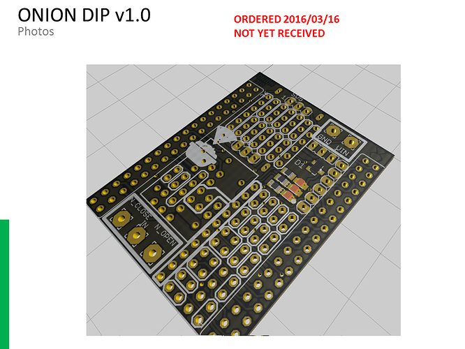
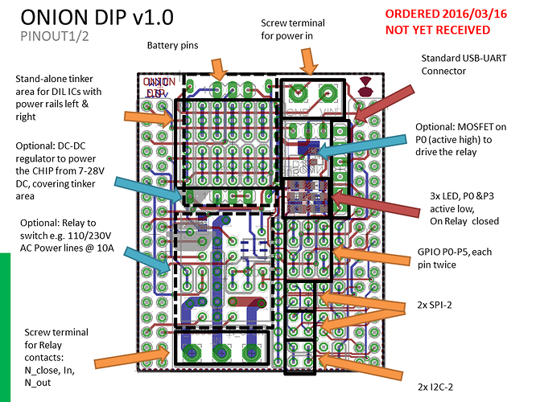
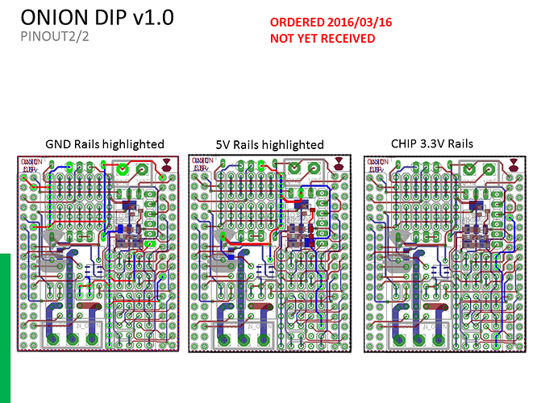
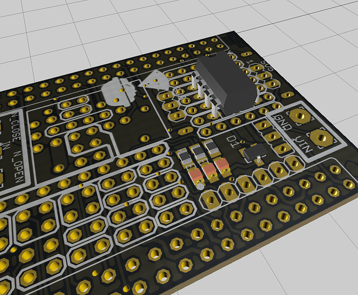

Welcome to GitHub Pages.
This github page is about the ONION DIP for the C.H.I.P. (a $9 computer developed by NTC). The C.H.I.P. is a great board, a tiny linux computer that fits on your palm. But what if you want to build your own extension DIP? A RTC to be always up to date, a rectifier to power the CHIP of a AC source. A build on a breadboard will work fine for a test but won't last for a permanent setup. This is where the ONION kicks in. It has a small tinker area with 2x5x3 pads and breaks out all the pins from the C.H.I.P. Here you can solder everything in place. The ONION is cheap enough to use one board per setup.
Features
- Breaks out many of C.H.I.P.s pins.
- Standard UART footprint for FTDI USB cable (but you can get it cheaper on eBay)
- Optionally: Provides three simple LEDs.
- Optionally: Can be equipped with an on-board n-MOSFET to drive some bigger loads.
- Optionally: Can also carry a Relay to drive some bigger AC loads (230V, 10A), e.g. your garden sprinkler. That relay is driven by the n-MOSFET.
- Optionally: An on-board DCDC regulator that allows me to power the ONION from 7-28V DC and provides stable 5V with up to 3A current to the ONION and the C.H.I.P.. (e.g. run your C.H.I.P. on the 12V from your car)
Power is a big issue on the C.H.I.P. most likely the #1 problem on the forum. The reason is that C.H.I.P. draws quite a lot current from the powersuppply (I've measured 350mA at idle, and ~500mA under load with spikes up to 650mA). If your powersupply can't handle those spikes with stable 5V but instead reduce the voltage C.H.I.P. crashes. I've measured the stability on a few of my phone chargers, which claim to be 1A stable. The first provided 4.65V at 350mA, the next 4.7V@350mA and went down to 4.2V when I started a CPU intense task. That when I've decided to add my own DCDC regulator.

This pictures actually shows the QUESO DIP, but it is the same DCDC regulator. At the moment I feed it with an old laptop charger, 80W at 20V give me a lot of backup and the worst I've seen was 4.75V at 1.5A load.
Picture
The board on its own

the pins on the ONION

and the power rails

possible installation of a RTC DIL-IC

Support or Contact
Please post questions about the ONION in the NTC forum at https://bbs.nextthing.co/t/onion-dip-prototyping-on-the-chip-ordered/